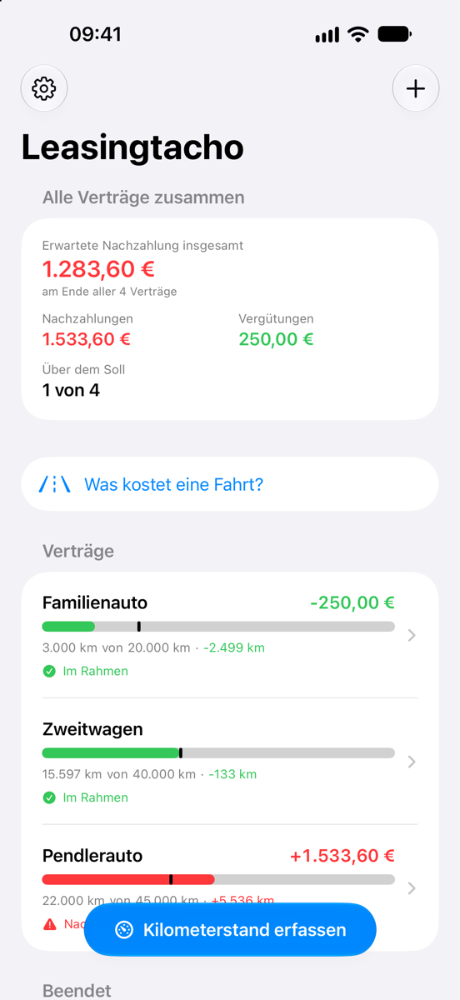
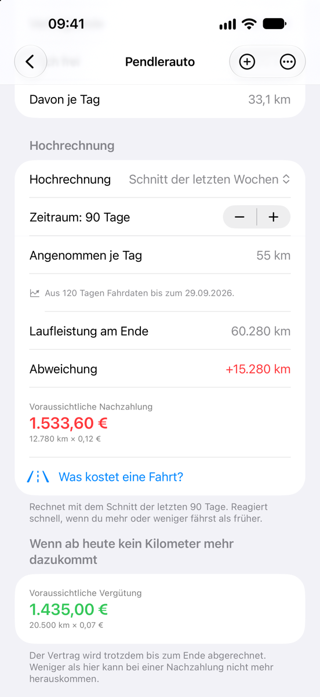
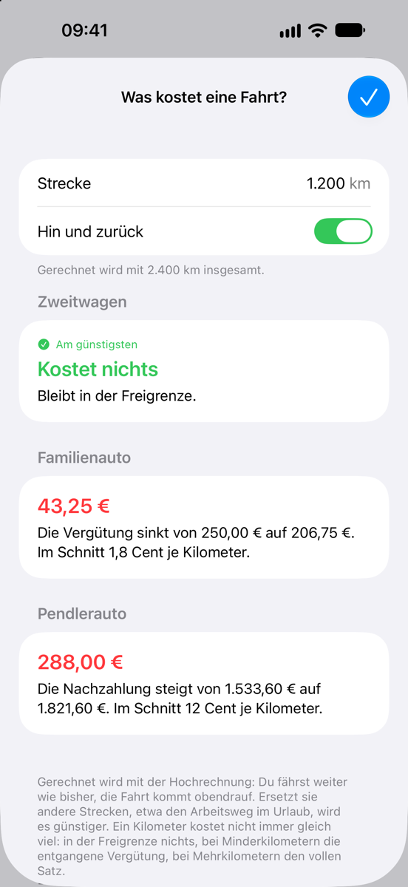
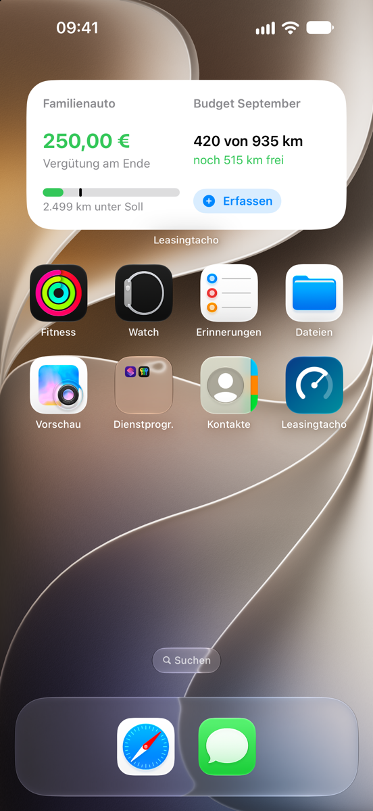
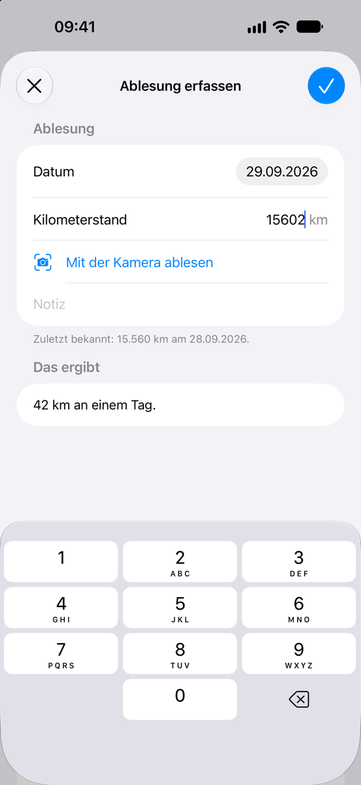
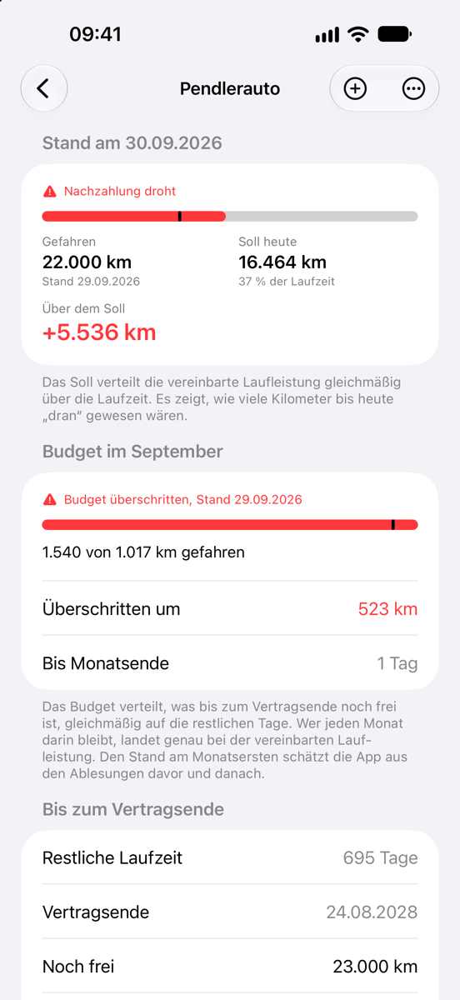
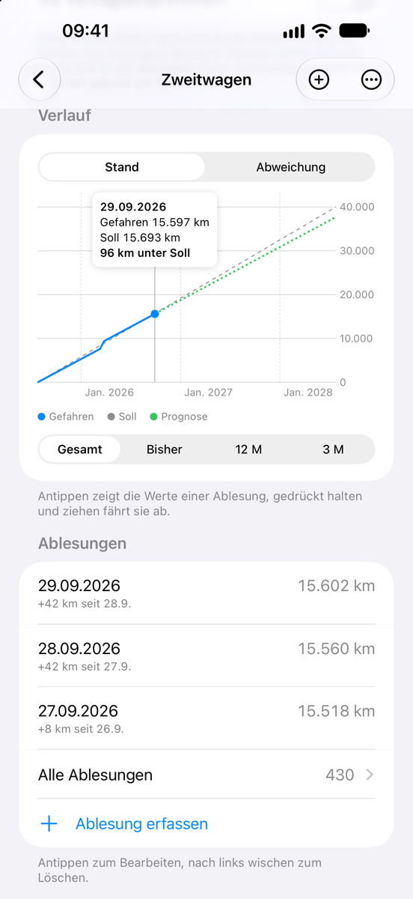
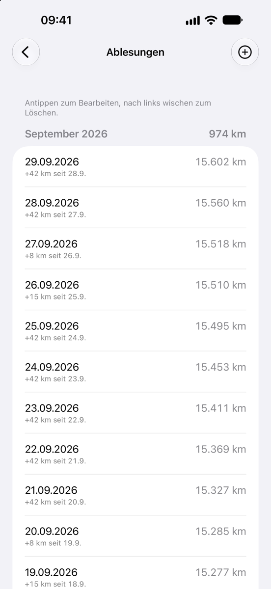

Was die App kann
Bei einem Kilometerleasing wird am Ende abgerechnet: Mehrkilometer kosten Geld, Minderkilometer werden vergütet. Leasingtacho zeigt dir schon unterwegs, worauf es hinausläuft.
Auswerten
-
Stand auf einen Blick
Wie viele Kilometer du gefahren bist, wie viele es zum heutigen Tag sein dürften und was das am Vertragsende als Nachzahlung oder Vergütung bedeutet.
-
Hochrechnung auf das Vertragsende
Aus dem Schnitt der letzten Wochen, seit Vertragsbeginn oder aus deiner eigenen Jahresannahme. Dazu die Rechnung für den Fall, dass ab heute kein Kilometer mehr dazukommt.
-
Was kostet diese Fahrt?
Gib eine Strecke ein, etwa die Urlaubsfahrt, und sieh, was sie am Vertragsende kostet: mehr Nachzahlung, weniger Vergütung oder gar nichts, solange sie in der Freigrenze bleibt. Bei mehreren Autos zeigt die App, mit welchem die Fahrt am günstigsten ist.
-
Budget für den Monat
Wie viele Kilometer diesen Monat drin sind, wie viel davon gefahren ist und was noch frei ist – so verteilt, dass du genau bei der vereinbarten Laufleistung landest.
-
Rechnet wie dein Vertrag
Sätze für Mehr- und Minderkilometer, Freigrenzen und eine Obergrenze für die Vergütung trägst du so ein, wie sie im Vertrag stehen. Nach dem Vertragsende zeigt die App die Schlussabrechnung.
-
Verlauf und Ablesungen
Ein Diagramm zeigt gefahrene Kilometer, Soll und Hochrechnung über die Laufzeit. Die Ablesungen stehen nach Monaten geordnet, mit den gefahrenen Kilometern je Monat.
Erfassen
-
Kilometerstand per Kamera
Halte die Kamera auf den Tacho und tippe auf den Kilometerstand – oder wähle ein vorhandenes Foto; die Ablesung fällt dann auf den Tag der Aufnahme. Das Bild wird nur auf deinem iPhone ausgewertet.
-
Ein Tipp von der Startseite
„Kilometerstand erfassen“ steht unten auf der Startseite. Für einen bestimmten Vertrag reicht ein Wisch nach rechts auf seiner Zeile.
-
Siri und Kurzbefehle
„Kilometerstand erfassen“ gibt es für Siri, Spotlight und die Kurzbefehle-App. Der Stand wird gespeichert, ohne dass du die App öffnest. Außerdem steht der Befehl im Menü des App-Symbols.
-
Erinnerungen
An fällige Ablesungen im Abstand, den du wählst, und auf Wunsch vier Wochen vor dem Vertragsende.
-
Widgets
Dein Stand auf dem Home- und dem Sperrbildschirm, ohne die App zu öffnen. Dazu ein Schalter „Kilometerstand erfassen“ für Kontrollzentrum und Aktionstaste.
Verwalten
-
Beliebig viele Verträge
Jeder Vertrag mit eigener Detailseite, dazu eine Gesamtübersicht über alle zusammen.
-
Abgleich über iCloud
Verträge und Ablesungen liegen in deiner privaten iCloud und kommen so auch auf ein neues iPhone mit.
-
App-Sperre
Auf Wunsch mit Face ID, Touch ID oder Gerätecode.
-
Export
Ablesungen als Tabelle (CSV) und den Stand von heute als Bericht – zum Weitergeben oder Aufbewahren.
-
Ohne Konto, Werbung und Tracking
Deine Daten bleiben bei dir. Der Anbieter der App sieht sie nicht. Mehr dazu in der Datenschutzerklärung.
Preis
Erst ausprobieren, dann einmal kaufen.
- Kein Abo
- Keine Werbung
- Einmalig 4,99 €
-
Sieben Tage kostenlos testen
Alle Funktionen, ohne Einschränkung. Die Probezeit endet von selbst; es entstehen keine Kosten.
-
Danach einmalig 4,99 €
Ein einmaliger Kauf in der App schaltet die Vollversion frei – dauerhaft und auf allen Geräten mit deiner Apple-ID.
-
Ohne Kauf
Deine Verträge und Ablesungen bleiben sichtbar und lassen sich weiter exportieren. Neue Ablesungen, neue Verträge und „Was kostet eine Fahrt?“ gibt es nur mit der Vollversion.
Der Preis gilt in Deutschland; in anderen Ländern nennt dir die App vor dem Kauf den dortigen Betrag. Hast du schon gekauft, holst du die Vollversion auf einem anderen Gerät in den Einstellungen der App über „Käufe wiederherstellen“ zurück.

Fragen und Antworten
Wie funktioniert die Probezeit?
Sieben Tage lang kannst du alle Funktionen ohne Einschränkung nutzen. Zum Start der Probezeit löst die App über den App Store einen kostenlosen Kauf aus – es wird nichts berechnet, und es beginnt kein Abo.
Apple merkt sich den Zeitpunkt an deiner Apple-ID. Deshalb gilt die Probezeit auf allen deinen Geräten gleich und beginnt nach einer Neuinstallation nicht von vorn.
Was passiert, wenn die Probezeit abläuft?
Nichts, was dich Geld kostet. Deine Verträge und Ablesungen bleiben sichtbar, und du kannst sie weiter exportieren. Neue Ablesungen und neue Verträge anlegen und Fahrten durchrechnen kannst du mit der Vollversion, einem einmaligen Kauf in der App für 4,99 €.
Wie bekomme ich die Vollversion auf ein neues iPhone?
Der Kauf gilt auf allen Geräten mit deiner Apple-ID. Melde dich auf dem neuen Gerät mit derselben Apple-ID an und tippe in den Einstellungen der App auf „Käufe wiederherstellen“. Berechnet wird dabei nichts.
Wie kommen meine Daten auf ein anderes Gerät?
Über iCloud. Ist auf deinen Geräten dieselbe Apple-ID angemeldet und iCloud für Leasingtacho eingeschaltet, gleicht die App Verträge und Ablesungen von selbst ab – auch beim Umzug auf ein neues iPhone.
Die Daten liegen dabei in deiner privaten iCloud; der Anbieter der App hat darauf keinen Zugriff. Ohne iCloud bleiben sie nur auf dem Gerät.
Wie exportiere ich meine Daten?
Öffne einen Vertrag und scrolle zum Abschnitt „Weitergeben“. „Ablesungen als Tabelle“ erzeugt eine CSV-Datei mit allen Ablesungen, die du etwa mit Numbers oder Excel öffnen kannst. „Bericht als Text“ fasst den Stand von heute zusammen.
Wohin die Datei geht, bestimmst du selbst im Teilen-Menü. Das geht auch nach der Probezeit ohne Kauf.
Wie lösche ich meine Daten?
Eine Ablesung löschst du, indem du sie in der Liste nach links wischst. Einen Vertrag samt allen Ablesungen löschst du genauso auf der Startseite oder mit langem Drücken auf seine Zeile. Mit iCloud verschwindet er dann auch auf deinen anderen Geräten.
Um alles zu entfernen, lösche die App und die Kopie in iCloud: Einstellungen → dein Name → iCloud → Speicher verwalten → Leasingtacho.
Erkennt die Kamera den Kilometerstand immer richtig?
Nicht immer – deshalb übernimmt die App nur die Zahl, die du antippst. Tageskilometer, Reichweite, Uhrzeit und Temperatur blendet sie aus, so gut es geht. Prüfe den Wert vor dem Speichern; zur Not tippst du ihn einfach ein.
Sind die Beträge verbindlich?
Nein. Leasingtacho rechnet mit den Angaben, die du aus deinem Vertrag überträgst, und mit deinen Ablesungen. Eine Hochrechnung ist eine Schätzung auf Grundlage deiner bisherigen Fahrleistung. Andere Posten der Rückgabe, etwa Schäden, berücksichtigt die App nicht.
Alle Angaben ohne Gewähr – maßgeblich ist die Abrechnung des Leasinggebers.
Sieht der Anbieter meine Daten?
Nein. Die App schickt keine Daten an den Anbieter, und es gibt weder Konto noch Tracking. Einzelheiten stehen in der Datenschutzerklärung.
Auf welchen Geräten läuft Leasingtacho?
Auf dem iPhone ab iOS 18.
Rechner und Ratgeber
Schnell nachrechnen oder nachlesen, wie die Abrechnung am Vertragsende funktioniert.
-
Leasing-Kilometer-Rechner
Vertragsdaten und Kilometerstand eintragen und sofort sehen, ob du über dem Soll liegst und was das am Ende kostet – direkt im Browser.
-
Mehrkilometer beim Leasing
Wie Mehrkilometer abgerechnet werden, was sie kosten und wie du rechtzeitig gegensteuerst.
-
Minderkilometer und Freigrenze
Wann du Geld zurückbekommst, wie die Freigrenze wirkt und warum die Vergütung oft gedeckelt ist.
-
Leasingrückgabe
Worauf es bei den Kilometern ankommt, wenn der Wagen zurückgeht – mit Checkliste.
Kontakt
Fragen, ein Fehler oder ein Wunsch für die nächste Version? Schreib an
Bei einem Fehler hilft eine kurze Beschreibung, was du getan hast und was dann passiert ist – gern mit Bildschirmfoto.